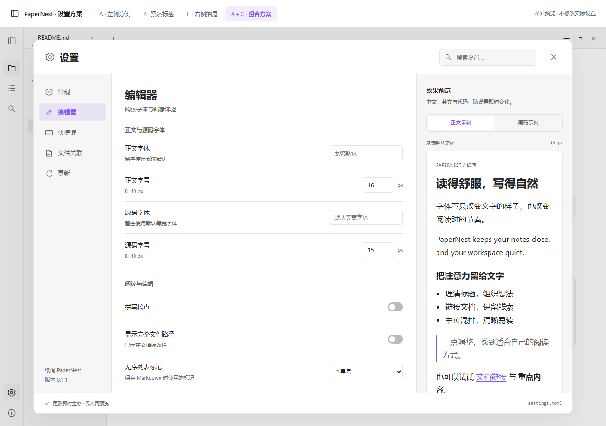
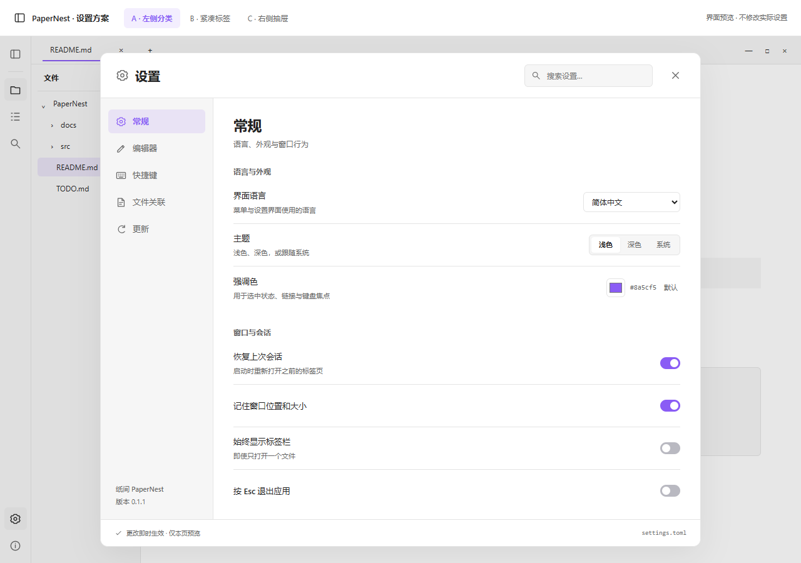
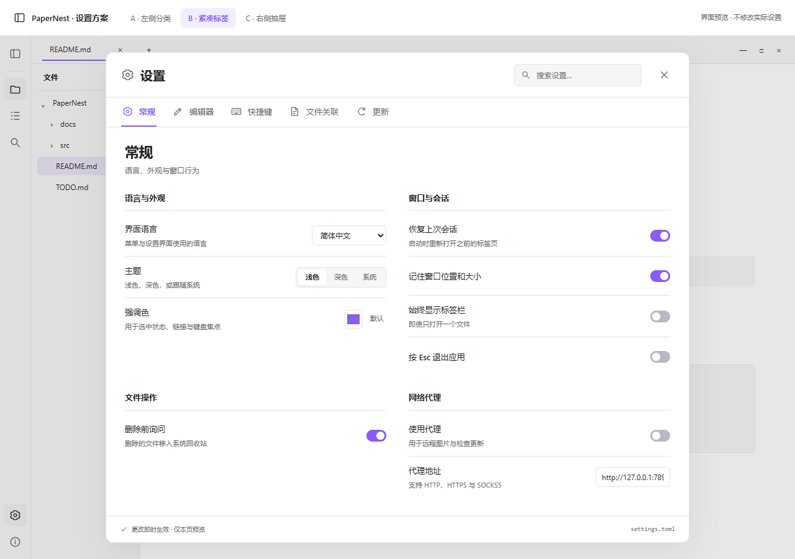
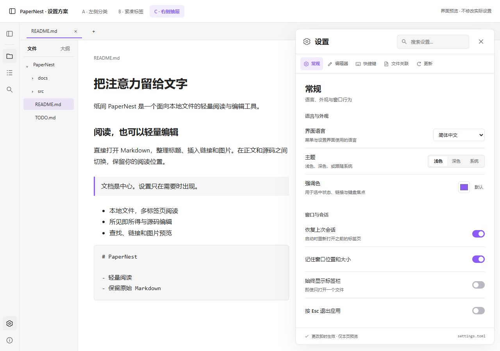

设置界面 / 三个方向与组合方案
让设置更好找，也更轻一点。
沿用项目的中性色与紫色强调色，保留现有设置能力。左侧功能栏已调整为文件、大纲、搜索，底部使用齿轮入口。打开预览后，可以切换分类、搜索设置、调整主题和字体。



建议优先看 A。分类更容易查找，和目前的文档应用风格一致。B 的改动较小；C 更适合频繁调整阅读外观。也可以选 A 的结构，搭配 C 的字体效果预览。
设置界面 / 三个方向与组合方案
沿用项目的中性色与紫色强调色，保留现有设置能力。左侧功能栏已调整为文件、大纲、搜索，底部使用齿轮入口。打开预览后，可以切换分类、搜索设置、调整主题和字体。




建议优先看 A。分类更容易查找，和目前的文档应用风格一致。B 的改动较小；C 更适合频繁调整阅读外观。也可以选 A 的结构，搭配 C 的字体效果预览。